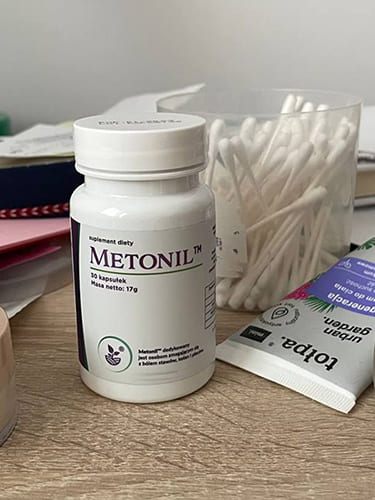
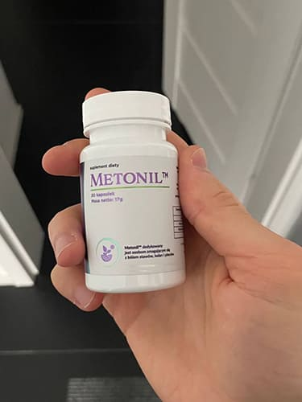
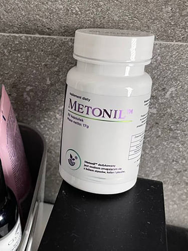

72-letnia Polka powiedziała, że całkowicie wyzdrowiała z bólu stawów i przebiegła maraton 42 km i 195 metrów.
Anna przebiegła 11 maratonów w ciągu 2 lat i zdobyła 2 nagrody oraz 8 medali w międzynarodowych zawodach biegowych.
W wieku 72 lat Anna ma poziom siły, aktywności i zdrowia, którego pozazdrościłby każdy człowiek po czterdziestce, ale nie zawsze cieszyła się tak dobrym zdrowiem.
Całe życie mieszkała w Gdańsku. Po 40. roku życia Annę zaczęły boleć stawy. W wieku 42 lat cierpiała już na osteochondrozę, rwę kulszową i zapalenie stawów. A w wieku 68 lat została niepełnosprawna, ponieważ zdiagnozowano u niej chorobę zwyrodnieniową stawu biodrowego. Jej stawy były prawie całkowicie zniszczone, ledwo mogła się ruszać i chodziła tylko o lasce, a już rok później musiała jeździć na wózku inwalidzkim.
Jej emerytura nigdy nie wystarczała na zakup drogich medykamentów. Biorąc pod uwagę jej podeszły wiek, Anna postanowiła poważnie zająć się swoimi stawami i bólem pleców. W rezultacie jej niepełnosprawność zniknęła po 2 latach. W wieku 70 lat specjalista, który ją badał, był zdumiony tym, jak zdrowa jest:
Ale najbardziej szokujące było to, że w wieku 72 lat Anna przebiegła najtrudniejszy maraton, ponad 42 kilometry i 195 metrów, i wygrała prestiżowy międzynarodowy puchar.
Jak udało jej się w takim wieku całkowicie wyleczyć bolące stawy i zdobyć honorowy międzynarodowy puchar i podziw Polaków?
Anna dzieli się swoim sekretem z naszymi czytelnikami.
Reporter: Anno, głównym pytaniem jest, jak zachować witalność, zdrowie, entuzjazm, jednocześnie zdobywając trofea w twoim wieku. Jaki jest Twój sekret?
Szczerze mówiąc, nie zawsze taka byłam. Całe życie pracowałam w fabryce, rozciągając i prostując plecy przez 8 godzin dziennie przez 25 lat. W wieku 42 lat byłam tak sztywna, że nie mogłam wyprostować ciała. Byłam leczona przez ponad 2 miesiące i zdiagnozowano osteochondrozę 4 stopnia. W tym czasie miałam artretyzm i mój staw biodrowy ciągle bolał. Dosłownie rok później musiałam chodzić z laską i faktycznie przez kilka miesięcy jeździłam na wózku inwalidzkim.
Doktor przepisał mi dziesiątki różnych środków. Teraz
nawet nie pamiętam ich nazw, bo dużo ich tam
było. Tabletki działały, ale nie na długo. Jeśli
pominęłam chociaż jedną tabletkę, to kilka godzin
później poczułam silny ból i potrafiłam zemdleć. O ile wiem, od
dziesięcioleci nic się nie zmieniło w zakresie opieki
nad stawami. Specjaliści wciąż nie wiedzieli, jak naprawić uszkodzone
stawy i sprzedawano dalej pięknie zapakowane medykamenty,
które reklamowały swoją skuteczność przesadnymi
obietnicami, ale w rzeczywistości mi pomagały tylko w 30%.
W tym czasie nie byłam już w stanie pracować. Po prostu leżałam lub siedziałam. Kupiłam garść tabletek i wydałam na nie wszystkie pieniądze, które zarobiłam przez ostatnie 7 lat ciężkiej pracy.
20 lat niepełnosprawności
Byłam niepełnosprawna przez prawie 20 lat. Wyobraź sobie agonię, przez którą przeszłam! I przez te 20 lat żaden uczony nie mógł mi pomóc. Kiedy skończyłam 70 lat, zdałam sobie sprawę, że tak naprawdę zostało mi tylko 3-4 lata życia, może 5. Nie czułam się zbyt dobrze. Jeśli któregoś dnia obudzę się i nic nie będzie mnie bolało, nie zdziwię się, jeśli rzeczywiście obudzę się w niebie.
Może tak bym właśnie umarła, gdyby nie moja ukochana wnuczka. Jej mąż jest specjalistą ds. reumatologicznych w Warszawie. Od razu powiedział, że aby przywrócić uszkodzone stawy, należy najpierw znormalizować równowagę płynu maziowego, a do tego trzeba oczyścić węzły chłonne. A jeśli uda mi się oczyścić węzły chłonne, to jeszcze mogę żyć. Wyjaśnił mi to na prostym przykładzie.
Wyobraź sobie, co by się stało, gdyby olej smarujący części w samochodzie nie został wymieniony? Oczywiście, że jego stan się pogorszy! Jego części uległyby awarii i samochód w końcu stałby się bezużyteczny.
Tak samo jest z naszym płynem limfatycznym. Dostarcza składniki odżywcze do wszystkich narządów i usuwa z organizmu produkty przemiany materii. Tymczasem zanieczyszczenia i toksyny nagromadzone przez lata w układzie limfatycznym zatruwają organizm. A to dotyczy przede wszystkim stawów i kręgosłupa, ponieważ chrząstka jest wrażliwa na zanieczyszczenie płynu limfatycznego.
Zanieczyszczony płyn limfatyczny powoduje nie tylko choroby stawów, ale także ponad 87% chorób, które rozwijają się w wieku 50-60-70 lat.
Dał jasne instrukcje:
Dokładnie 3 kroki!
Po otrzymaniu tej rady od męża mojej wnuczki byłam bardzo zaskoczona. Rzeczywiście, przez 20 lat ANI JEDEN DOKTOR MI O TYM NIE POWIEDZIAŁ!
Natychmiast posłuchałam rady, którą otrzymałam. A wiesz, co stało się później? Po 6 miesiącach zeszłam z wózka, a rok później byłam całkowicie zdrowa! Ponadto doradził mi trochę ćwiczeń. Zaczęłam biegać, gdy miałam 70 lat, aw tym roku, gdy miałam 72 lata, przebiegłam największy międzynarodowy maraton, ponad 40 km i wygrałam puchar.
Nie tak dawno jeździłam na wózku inwalidzkim i przygotowywałam się do własnej śmierci, a po około 2 latach mogłam wstać i podnieść kubek wysoko w towarzystwie setek zachwyconych ludzi. Co to jest, jeśli nie cud?
Reporter: Twoja historia to prawdziwy cud! Naprawdę cię podziwiam. Jesteś bardzo silną osobą. Ale jak myślisz, dlaczego tak mało mówi się o naprawie stawów i przedłużaniu życia? Co to za spisek?
Powiedz mi, kto potrzebuje starych ludzi? Starzy ludzie są tylko ciężarem dla wszystkich. Nie opłaca się ich leczyć i przedłużać im życie, bo im dłużej żyjemy, tym więcej muszą płacić nam emerytury. Starsi ludzie są obciążeniem dla każdej gospodarki. Dlatego nikt nie pomyślał o przedłużeniu naszego życia.
Również leczenie chorób to dziś biznes wart wiele miliardów dolarów (zwłaszcza tych związanych z układem mięśniowo-szkieletowym). Wystarczy obliczyć, ile pieniędzy wydajesz na pigułki i wizyty w gabinetach. Następnie wyobraź sobie, ilu jest pacjentów takich jak ty, którzy płacą za pigułki i wizyty. Dlatego utrzymywanie ludzi w zdrowiu jest bardzo niekorzystne dla farmaceutów. O wiele bardziej opłacalne jest podawanie im nieskutecznych pigułek, które tylko doraźnie pomagają.
Chcemy tylko żyć dłużej, więc możemy polegać tylko na sobie, aby się wyleczyć. Jeśli chcesz żyć długo i cieszyć się życiem, jest tylko jeden sposób. Musisz sam znaleźć odpowiedni sposób.
Reporter: Czy mogłabyś mi powiedzieć
dokładnie, jak odzyskałaś swoje stawy?
Teraz jest to łatwiejsze. Dawniej trzeba było zbierać lub zamawiać specjalne zioła, robić z nich ekstrakty i miesiącami czyścić węzły chłonne (pierwsze czyszczenie trwało prawie 6 miesięcy!). Następnie trzeba było zamówić kolejne specjalne zioło i przywrócić równowagę maziową. Zwykle cały ten proces trwał ponad rok. To bardzo długi czas.
Z drugiej strony nie musisz robić nic więcej, ponieważ sam proces gojenia jest kompleksowy. Łącznie tylko 3 miesiące!
Istnieją bardzo dobre kapsułki, w którym zostały już zebrane wszystkie pierwiastki śladowe niezbędne do kompleksowej naprawy stawów, nazywa się . Zawiera mikroelementy dla trzech etapów gojenia – oczyszczania limfatycznego, przywracania równowagi maziowej oraz dostarczania koleganu i kwasu hialuronowego. Dodaje się również cynk. Ale najważniejsze jest to, że te 3 etapy odbywają się równolegle i trwają maksymalnie 3 miesiące. Wystarczy przyjmować te kapsułki jeden raz dziennie i to wszystko.
Zalecam wykonywanie tych 3 kroków co 2-3 lata. Będziesz żył 80, 100 lat, a może nawet 120 lat, jeśli to zrobisz. Jednocześnie nie odczujesz bólu stawów i będziesz aktywny i wesoły. Zaufaj mi! Będziesz się czuł o wiele lepiej niż jak zepsuta staruszka przeżywająca ostatnie lata!
Metoda, o której opowiedziała nam biegaczka, wydaje się działać i jest skuteczna. Ale czy to naprawdę prawda? Przed opublikowaniem tego materiału i udostępnieniem go naszym czytelnikom postanowiliśmy skonsultować się z uznanym polskim naukowcem, czołowym specjalistą, dr. Adamem Zaborskim.
Reporter: Doktorze Zaborski, czy uważa Pan, że taka trzyetapowa metoda naprawdę może przywrócić zdrowie stawom?
Tak, zapoznałem się z tym składem bardzo szczegółowo i to prawda. Czysta limfa jest kluczem do zdrowia człowieka. Odbudowa mazi stawowej zapewnia odpowiednią ochronę przed przedwczesnym odklejeniem się krążka stawowego. Oczywiście Anna opisuje procesy zachodzące we wszystkich organach tylko na podstawowym poziomie, ale ogólnie wszystkie są poprawne.
Obecnie coraz więcej uczonych uważa, że przywracanie równowagi powinno być obowiązkowe dla wszystkich powyżej 40. roku życia. A jeśli pracy konkretnej osoby towarzyszy aktywność fizyczna, to te terapię należy przeprowadzić wcześniej. Jeśli dana osoba przeszła taką terapię raz po 30 roku życia, ma gwarancję ochrony przed chorobami stawów przez kolejne 10 lat.
Reporter: Czy mógłbyś opowiedzieć mi trochę więcej o tych kapsułkach: . Co to za kapsułki?
to krajowe kapsułki produkowane w Polsce.
Wraz z kolegami badaliśmy ten produkt. Chciałbym wam pokazać wyniki tego badania. W badaniu wzięło udział łącznie 270 ochotników.
- Limfa jest całkowicie oczyszczona z toksyn i innych zanieczyszczeń – u 96% badanych;
- Płyn stawowy zostaje całkowicie przywrócony do ilości niezbędnej do prawidłowego funkcjonowania układu mięśniowo-szkieletowego – u 98% badanych;
- Staw powraca do pierwotnego kształtu - u 94% badanych;
- Zwiększa się dynamika wzrostu tkanki chrzęstnej – u 74% badanych;
- Zwiększyła się skuteczność leczenia chorób przewlekłych – u 98% badanych.
Ważne! Doszliśmy do wniosku, że to najlepsza pora roku na rozpoczęcie leczenia chorób stawów. Ze względu na większą średnią temperaturę, co przyspiesza metabolizm, zwiększa się ukrwienie organizmu, zwiększa się przepływ krwi i tlenu w narządach wewnętrznych, wzrasta efekt stosowania kapsułek. Zabieg jest o 67% skuteczniejszy niż w pozostałych porach roku.
Reporter: Gdzie można kupić i ile to kosztuje?
W celu zwrócenia uwagi na produkt prowadzimy program promocyjny od do . Wierzę, że poczta pantoflowa zadziała i każdy osiągnie doskonałe wyniki.
Komentarze
Paweł
Przeczytałem artykuł tak szybko, jak to możliwe. Mam
ten sam problem co główna bohaterka. I nigdy nie
słyszałem o takiej metodzie od żadnego specjalisty. Warto nie
musieć marnować czasu. Wszystkie potrzebne składniki są już
dostępne w kapsułkach . Zamówiłem i już
sam próbuję!

Grzegorz
Ja też to zamówiłem. Słyszałem o u. Wiele osób go chwaliło, ale nie wiedziałem, gdzie go kupić. Ale teraz wiem, plus jest zniżka!
Irena
Dziękuję!
Danuta
Kapsułki są świetne! Nie mam większych problemów i nie jeżdżę na wózku, ale od ponad 10 lat bolą mnie plecy. I żaden spechalista nie może mi pomóc! Wzięłam wiele tabletek i wszystkie były bezużyteczne! Kupiłam preparat i ból zniknął w 2 tygodnie! To cud! Jeszcze raz dziękujemy za to odkrycie!
Józef
Używam go od 2 tygodni. Ból w kolanie zniknął.
Zacząłem czuć się zdrowszy, a nawet zacząłem biegać
rano. Zamówiłem jeszcze 2 opakowania na zapas. Polecam
wszystkim!

Adrian
Mój sąsiad powiedział o tym swojej siostrze, która jest ekspertem, i ona pochwaliła
te kapsułki. Radzi mi kupić produkt tak szybko, jak to
możliwe, dopóki są jeszcze zniżki.
Walentyna
Skład u jest naprawdę imponujący! Plus za kolagen i kwas hialuronowy w składzie.

Katarzyna
Szkoda, że tak dobrego produktu prawie już nie ma. Co o tym myślą nasi uczeni?

Bożena
W wieku 72 lat przebiegła 42 km??? Czy to naprawdę
możliwe? Mam dopiero 45 lat i nie umiałabym nawet
przebiec kilometra! Zamówiłam 3 opakowania natychmiast!

Magdalena
Podstawowym budulcem naszego ciała są nasze kości i stawy, a także nasz układ naczyniowy. Jeśli zadbasz o nie i wykonasz profilaktykę na czas, możesz żyć 100-120 lat. Dzięki za informację!
Henryka
Jestem bardzo ciekawa produktu, muszę spróbować!

Emilia
Moja mama bierze od 2 tygodni i jestem pod ogromnym wrażeniem. Sama sobie wnosi zakupy na 3 piętro, o czym nie było wogóle mowy przez ostatnie dwa lata...
Elżbieta
Dziękuję! Zamówiłam!
Agnieszka
Używam tych kapsułek dopiero od 5 dni i dziś obudziłam się bez bólu stawów. Naprawdę mam nadzieję, że to pomoże przywrócić moją sprawność stawów! Dziękuję!